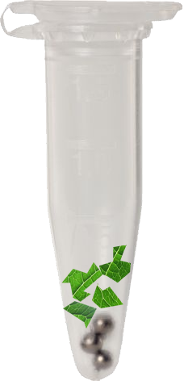

Técnicas moleculares
- Extração do DNA
- Amplificação
- Eletroforese
- Sequenciamento
Extração do DNA
O protocolo de extração de DNA é a primeira etapa do laboratório de análise molecular.
O “protocolo CTAB” solução tampão CTAB (Doyle e Doyle 1987).
Maceração
- Colocar 20–30 mg de material desidratado em sílica em microtubo (eppendorf) de 2 ml e 8–10 esferas de aço (2 mm)

- Macerar no Mini-Beadbeater (BioSpec)

Adição do tampão CTAB

- Centrifugar
- Lavar o pellet

- Etapa de pré-lavagem com sorbitol para materiais herborizados (Inglis et al. 2018).
Amplificação
A Reação em cadeia da polimerase (Polymerase Chain Reaction - PCR) é um procedimento para clonagem molecular.
Enzimas de restrição (tesouras moleculares)
- Reconhecem e clivam diferentes sítios de restrição.
Primers (DNAs iniciadores)
Enzima DNA polimerase
- Faz a replicação do DNA.
Eletroforese
Técnica usada para separar fragmentos de DNA de acordo com seu tamanho.
As amostras são colocadas nos poços localizados em uma das extremidades de um gel de agarose, e uma corrente elétrica é aplicada para que as amostras avancem pelo gel.
Quando um gel é pigmentado com um corante que se liga ao DNA, os fragmentos de DNA podem ser vistos como bandas. Cada banda representa um grupo de fragmentos de DNA de mesmo tamanho.

- Para a visualização se utiliza a luz UV de um transiluminador.
 A concentração da amostra é crucial para o sucesso da reação de sequencimento. Usar muito pouco DNA é um erro que leva a nenhum sinal ou a sinais fracos, mas usar muito é um erro também!
A concentração da amostra é crucial para o sucesso da reação de sequencimento. Usar muito pouco DNA é um erro que leva a nenhum sinal ou a sinais fracos, mas usar muito é um erro também!
Sequenciamento
História do sequenciamento didesoxi Sanger
O sequenciador ABI utiliza o método de sequenciamento tradicional, proposto por Frederick e Sanger na década de 70, para gerar sequências entre 300 e 850pb. Na reação de sequenciamento são utilizados, além dos nucleotídeos comuns, nucleotídeos modificados e marcados com fluorescência, chamados dideoxirribonucleotídeos. Cada nucleotídeo (A, C, G, T) é marcado com um fluoróforo distinto. Durante a reação de extensão do fragmento de DNA, quando um nucleotídeo modificado é incorporado ao fragmento, o que ocorre de forma aleatória, a reação é interrompida. Os fragmentos de DNA gerados serão, portanto, de tamanhos diversos. Depois de separados por eletroforese capilar, uma câmera CCD (detector) acoplada ao equipamento irá identificar a fluorescência emitida pelo nucleotídeo marcado e assim caracterizá-lo (https://www.einstein.br/pesquisa/pesquisa-experimental/plataformas/plataforma-sequenciamento).

Os princípios de replicação do DNA foram usados por Sanger et al. no desenvolvimento do processo agora conhecido como sequenciamento didesoxi Sanger.
Esse processo aproveita a capacidade da DNA polimerase de incorporar 2’,3’-didesoxinucleotídeos – análogos de bases nucleotídicas que não possuem o grupo 3’-hidroxila essencial na formação da ligação fosfodiéster (DNA Sequencing by Capillary Electrophoresis 3ed).
O sequenciamento de didesoxi Sanger requer um molde de DNA, um primer de sequenciamento, DNA polimerase, desoxinucleotídeos (dNTPs), didesoxinucleotídeos (ddNTPs) e tampão de reação.
Quatro reações separadas são configuradas, cada uma contendo nucleotídeos marcados radioativamente e ddA, ddC, ddG ou ddT.
As etapas de anelamento, rotulagem e terminação são realizadas em blocos térmicos separados.
- A síntese de DNA é realizada a 37°C, a temperatura na qual a DNA polimerase tem a atividade enzimática ideal.
- A DNA polimerase adiciona um desoxinucleotídeo ou o correspondente 2’,3’-didesoxinucleotídeo em cada etapa da extensão da cadeia.
- A adição de um desoxinucleotídeo ou um didesoxinucleotídeo depende da concentração relativa de ambas as moléculas. Quando um desoxinucleotídeo (A, C, G ou T) é adicionado à extremidade 3’, a extensão da cadeia pode continuar. No entanto, quando um didesoxinucleotídeo (ddA, ddC, ddG ou ddT) é adicionado à extremidade 3’, a extensão da cadeia termina. O sequenciamento dideoxy Sanger resulta na formação de produtos de extensão de vários comprimentos terminados com dideoxynucleotídeos no final de 3’.
O sequenciador ABI (Applied Biosystems) é um instrumento baseado em laser que utiliza marcadores fluorescentes para analisar os produtos de uma reação de sequenciamento à medida que migram através de um gel. Depois que os dados são coletados a partir de uma execução de sequenciamento, o programa Analysis da Applied Biosystems identifica e rastreia os rastros (traces) de amostra do gel e, subsequentemente, normaliza e integra os dados brutos (raw data) em um cromatograma da sequência final.
Bases ambíguas tendem a ocorrer perto do final da sequência e podem ser editados ou excluídos pelo usuário antes de exportar os dados para outras comparações ou alinhamentos (Hagemann e Kwan 1999).